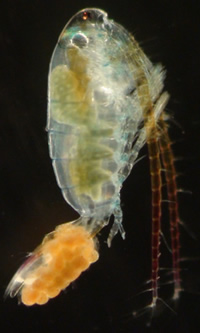

Taxonomy
You have identified your specimen:

Calanoid copepod female
Your specimen is a female calanoid copepod. Identification from this point forward in the key uses distinguishing features found only on male individuals.
If you have or can obtain another specimen that has a
geniculate right antenna, click here to continue identification.
Phylum
Arthropoda
Subphylum
Crustacea
Class
Maxillopoda
Subclass
Copepoda
Order
Calanoida